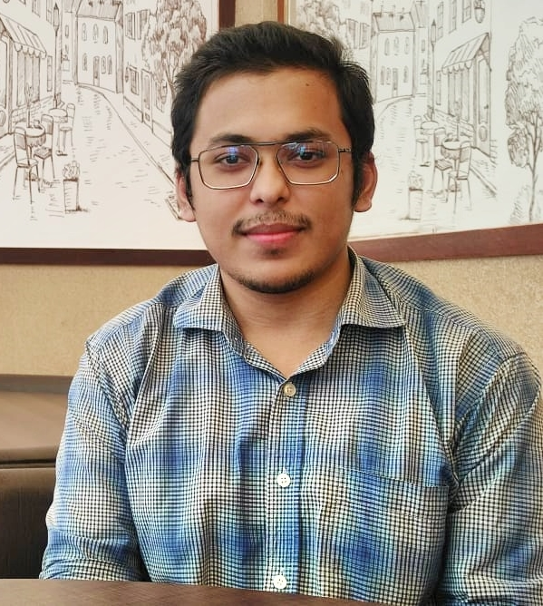

 ContactMoghbazar, Dhaka: 1217 aamin.hossen99@gmail.com(LinkedIn) (Github) Top SkillsWeb Development Wordpress Mobile Photography LanguagesHindi (Limited Working Bangla (Native or Bilingual) English (Professional Working) Urdu (Elementary) CertificatesAdobe Photoshop CC Crash Course, YouTube Responsive Web Design, CoderTrust BD Webinar on "The Future of Mobile App Industry." |
Md Al Amin HossenBSc CSE At AIUBDhaka, BangladeshSummary-A Man Who Loves to Discover!
Self-learner, dreamer, Hi there! Experience-The Authentic Store Co-FounderMay 2021 - Present (9 months) Dhaka, Bangladesh A web-based authentic and aesthetic gadget brand of Bangladesh. A brand that never compromises with quality. Digital Bangladesh News Managing DirectorSeptember 2020 - April 2021 (8 months) Dhaka, Bangladesh Digital Bangladesh is your news, entertainment, music fashion website. We provide you with the latest breaking news and videos straight from the entertainment industry. Education-American International University-Bangladesh BSc CSE · (November 2018) Dhaka Imperial College Higher Secondary School Certificate, Science · (2016 - 2018) Faizur Rahman Ideal Institute Secondary School Certificate, Science · (2014 - 2016) |
| ©2022 | All Rights Reserved by MdRasen | |